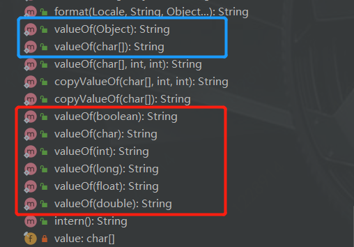

Java API中String.valueOf(Object obj)方法，当传入的参数为一个引用，并且引用为null时，方法会返回字符串"null"，这样就会引发一些你意向不到的”血案”
jdk1.8.0_181中String.valueOf(Object obj)源码：
1 | /** |
但当你用main方法验证时，又出现了NPE，What？
1 | public static void main(String[] args) { |
点进方法后，发现调的是这个：
1 | /** |
这是两个问题：
1、String.valueOf(Object obj)，如果obj为null，则返回”null”
这没什么好说的，因为源码就是这样写的，当你使用这个方法时，只需要特别注意一下返回值的判断，不是if(str == null)，而是if(str.equals("null"))
另外一点也体现出看源码的重要性，所以以后再调用任何API时都养成看源码的好习惯
2、System.out.println(String.valueOf(null))为什么会走到String valueOf(char data[])，而不是String.valueOf(Object obj)？
看下String类库，有如下几种valueOf方法：

其中红色框中都是基本类型，null不是基本类型，能接受String.valueOf(null)的只有蓝色框中的方法，因为char[]比Object更精确，所以选择了String.valueOf(char[])
何谓精确：这两个都能接受
null的参数，这种情况下，java的重载会选取其中更精确的一个，所谓精确，比如有重载方法A和B，如果方法A入参是方法B入参的子集，则A比B更精确，换句话说就是char[]是Object的子集，毕竟Object是老大，当直接传null时会选择String.valueOf(char[])